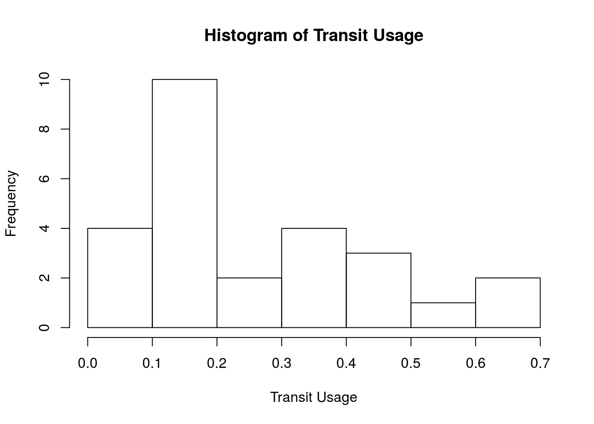
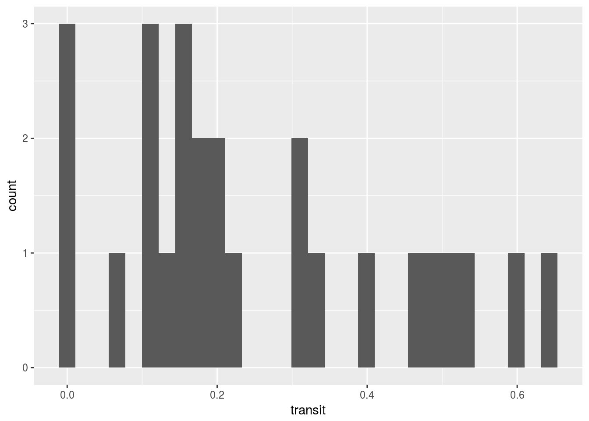
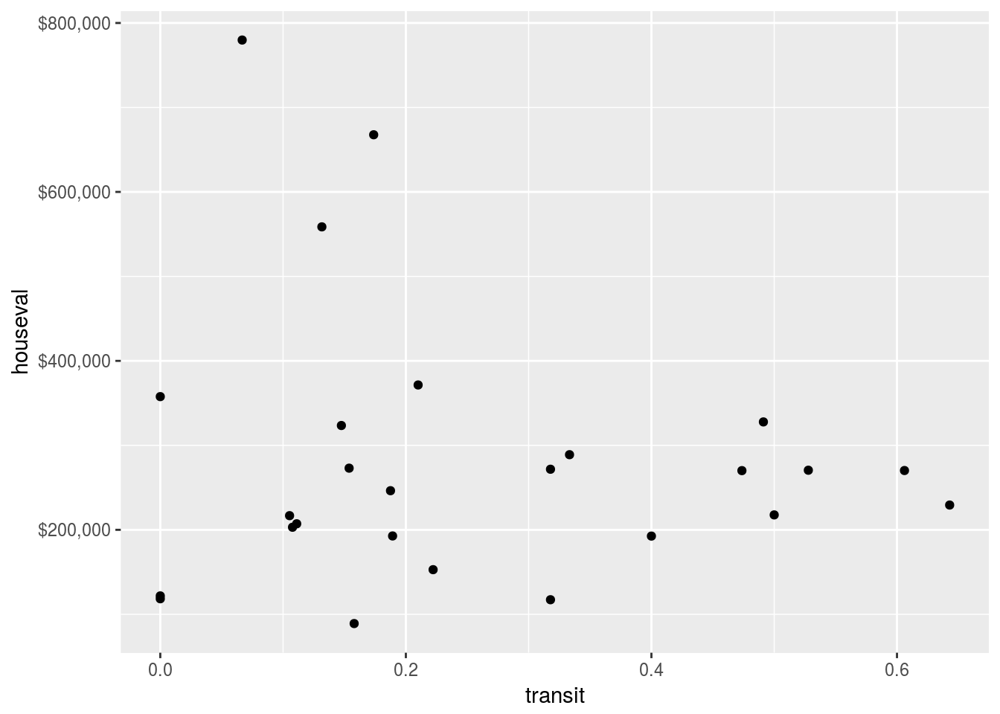

Lab 1: Intro to R & RStudio
Jamaal Green and Liming Wang
4/4/2017
Data file:
Introduction to R
- Download and Install
- Getting Started: Understand Basic Data Structure and Conventions
- Getting to Know Your Dataset: Variable Types
- Construct Some Descriptive Statistics
Download and Install R (for those not on lab machines)
Install the R Software Go to http://cran.rstudio.com/ and click on Download R for Windows (or OSX), click on install R for the first time and download R. When the file is done downloading, double click “R-3.3.3-win.exe” (or apporiate installation file for your OS) to install the file and select Run, and continue with the installation wizard.
Install Rstudio There are many ways to interface with R from the bare-bones base R software, RStudio, or R Commander (a GUI wrapper for base R). We will be using RStudio for our labs. In order to install RStudio visit http://www.rstudio.com/products/rstudio/download and download RStudio for desktop for your operating system. If in the lab and RStudio is not installed and the software manager is not working you can download the zip/tar RStudio for windows, open the zip file, and run RStudio without installing. If you must do this, then I recommend downloading the zip/tar file to your H: drive where it can rest.
Getting Started: Understand basic data structure and conventions
Downlad the californiatod.csv file and save in your personal folder or C: drive. Open up RStudio, click Tools –> Import Dataset –> From Local File and navigate to your folder and click the csv. Make sure the Heading option is marked as “Yes” and press Ok.
#install.packages(readr)
library(readr)
catod <- read_csv("californiatod.csv")## Parsed with column specification:
## cols(
## name = col_character(),
## region = col_character(),
## transit = col_double(),
## density = col_double(),
## houseval = col_double(),
## railtype = col_character()
## )Environment Tab You can see your data by clicking on the Environment Tab in the upper right corner of your RStudio console and clicking the table catod.
Create Quick Summary In your console type
summary(catod)## name region transit density
## Length:26 Length:26 Min. :0.0000 Min. : 1.720
## Class :character Class :character 1st Qu.:0.1162 1st Qu.: 3.225
## Mode :character Mode :character Median :0.1883 Median : 4.335
## Mean :0.2529 Mean : 5.360
## 3rd Qu.:0.3833 3rd Qu.: 5.135
## Max. :0.6429 Max. :14.850
## houseval railtype
## Min. : 89046 Length:26
## 1st Qu.:195318 Class :character
## Median :258209 Mode :character
## Mean :282155
## 3rd Qu.:314860
## Max. :779792Getting to Know Your Dataset: Variable Types
Look at the output from the dataset summary. We can see that “name”, “region”, and “railtype” are nominal variables (frequency count only), and “transit”, “density”, and “houseval” are interval-ration data (summary statistics).
Create a frequency table (nominal variables). We will create a frequency table using the table() function in R for “railtype”. This can be used to get basic frequencies for one or two variables (one for columns and one for rows). Note that the $ operator after the name of the table tells R which column(s) in our dataframe to reference.
table(catod$railtype)##
## Heavy or commuter rail Light rail
## 17 9Construct Descriptive Statistics
The methods for analyzing your variables depend on the variable type.
Categorial/Nominal Variables
Create a Frequency Table. Frequency tables help us to understand categorical variables. To create one use the table() function.
Create a Cross-Tabulation Table. To see how rail type breaks down by region we will create a cross-tabulation table for the two categorical variables (railtype and region). Which region has the most light rail TOD sites in this dataset?
table(catod$railtype, catod$region)##
## Bay Area LA Sacramento SD
## Heavy or commuter rail 12 4 0 1
## Light rail 1 2 2 4Continuous (ordinal or Interval-Ratio) variables
In order to produce summary statistics for continuous variables we will use the summary() function. And to calculate the standard deviation we will use the sd() function.
summary(catod$density)## Min. 1st Qu. Median Mean 3rd Qu. Max.
## 1.720 3.225 4.335 5.360 5.135 14.850sd(catod$density)## [1] 3.531352An alternative way that will give us summary statistics for all of the continuous variables in our dataframe in a neat table is to use the stargazer pacakge.
Compare the mean density to the minimum and maximum value for transit usage. Is the mean closer to the minimum or the maximum? How does it compre to the median? What does this tell us?
#first we will install and unpack stargazer
#install.packages("stargazer")
library(stargazer)##
## Please cite as:## Hlavac, Marek (2015). stargazer: Well-Formatted Regression and Summary Statistics Tables.## R package version 5.2. http://CRAN.R-project.org/package=stargazerstargazer(catod, type = "text")##
## =================================
## Statistic N Mean St. Dev. Min Max
## =================================Let’s explore further. This time we will include the skewness and kurtosis of our summary stats. (we will use the psych package for this)
#the psych package gives us some more powerful summary #functions that give us even more summary values than just
#mean and median
#install.packages("psych")
#just delete the # before the install.packages() to install psych
library(psych)
describe(catod)## vars n mean sd median trimmed mad
## name* 1 26 NaN NA NA NaN NA
## region* 2 26 NaN NA NA NaN NA
## transit 3 26 0.25 0.19 0.19 0.24 0.19
## density 4 26 5.36 3.53 4.34 4.81 1.62
## houseval 5 26 282154.69 163092.19 258209.17 258284.88 96930.33
## railtype* 6 26 NaN NA NA NaN NA
## min max range skew kurtosis se
## name* Inf -Inf -Inf NA NA NA
## region* Inf -Inf -Inf NA NA NA
## transit 0.00 0.64 0.64 0.54 -0.96 0.04
## density 1.72 14.85 13.13 1.53 1.38 0.69
## houseval 89045.74 779791.98 690746.24 1.57 2.08 31985.01
## railtype* Inf -Inf -Inf NA NA NAHistograms
As with all things in R there are multiple ways to get to the same spot. We will make a histogram in order to look at the distribution of transit usage frequency using base R commands and then using the ggplot2 package.
hist(catod$transit, main="Histogram of Transit Usage", xlab = "Transit Usage")
#install.packages("ggplot2")
library(ggplot2)##
## Attaching package: 'ggplot2'## The following objects are masked from 'package:psych':
##
## %+%, alphap1 <- ggplot(catod, aes(x = transit))
p1 + geom_histogram()## `stat_bin()` using `bins = 30`. Pick better value with `binwidth`.
Look at the histogram for density. What does this indicate about whether more TOD sites are located in high or low-density areas?
Scatterplot
A scatterplot will show us the relationship between two continuous variables. Again we will use a base R and ggplot approach.
#comparing transit usage and houseval
plot(catod$transit, catod$houseval)
#we will install the "scales" package so we can label
# our Y axis in dollars
#install.packages("scales")
library(scales)##
## Attaching package: 'scales'## The following objects are masked from 'package:psych':
##
## alpha, rescale## The following objects are masked from 'package:readr':
##
## col_factor, col_numericp2 <- ggplot(catod, aes(x=transit, y = houseval))
p2 + geom_point() + scale_y_continuous(labels = scales::dollar)
Tables of Statistics
Create a two-way cross Run a two-way cross-tabulation for each of the following questions:
- Does transit usage vary by region?
- Does transit usage vary by rail type?
Then we will measure the two-way cross tab of these two categorical variables with the means of a continuous third variable. This sounds complex but we shall approach it in a straight forward way using the dplyr package.
#in order to get these cross tabs with the additional #continuous variable we will use the table() function then
#dplyr
#install.packages("dplyr")
library(dplyr)##
## Attaching package: 'dplyr'## The following objects are masked from 'package:stats':
##
## filter, lag## The following objects are masked from 'package:base':
##
## intersect, setdiff, setequal, uniontable(catod$region, catod$railtype)##
## Heavy or commuter rail Light rail
## Bay Area 12 1
## LA 4 2
## Sacramento 0 2
## SD 1 4catod %>% group_by(region, railtype) %>%
summarise(avg_transit = mean(transit))## Source: local data frame [7 x 3]
## Groups: region [?]
##
## region railtype avg_transit
## <chr> <chr> <dbl>
## 1 Bay Area Heavy or commuter rail 0.3732583
## 2 Bay Area Light rail 0.0000000
## 3 LA Heavy or commuter rail 0.2090250
## 4 LA Light rail 0.1589000
## 5 Sacramento Light rail 0.1900500
## 6 SD Heavy or commuter rail 0.1538000
## 7 SD Light rail 0.1020000The dplyr package is designed to perform table operations on dataframes for data manipulation and some summarization. The preceding syntax told R to take our catod dataframe, group by the variables for region and railtype, and then calculate the mean transit usage from there. This is similar to the kind of pivot table operations one can do in excel.
Other Useful Tidbits
Script Window
If you click button with the little green + sign in the upper left corner of your screen you will get a series of options. Click “R Script” and this will open a new window of an R script file. R script files are simply text files that hold our R code. You can type commands into them and press Run at the top of the window to run the entire script. If you scroll to the end of the line you just typed and hit “CTRL+r” R-Studio will execute that line. Additionally you can highlight multiple lines of code and type “CTRL+Enter” and it will return the selection.
Area under the curve (withou z-score lookup)
If you’re trying to find out what proportion of the sample had incomes between $25,000-$30,000 (assuming a normal distribution of income), and you know the mean income is $20,000 and the standard deviation is $10,000, you can look up the proportion using the pnorm function.
Type the command into the script window and hit “Run”
pnorm(30000, mean = 20000, sd= 10000) ## [1] 0.8413447